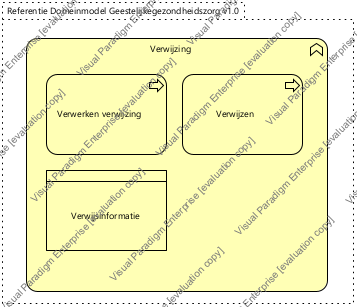

|
|
|
Generieke architectuur : Model . Architectuur : Package . Business architectuur : Package . Geestelijke gezondheidszorg : Package . Zorgprocessen - Geestelijke gezondheidszorg : Package
 ArchiMate Diagram - Samenwerking - Verwijziging (GGz)
ArchiMate Diagram - Samenwerking - Verwijziging (GGz)
 link
link
| Jump to: |
|  |
| Dit domein bevat de activiteiten voor verwijzingen van en naar andere zorgverleners. |